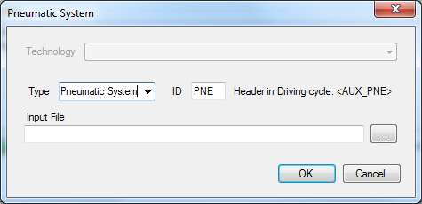

Auxiliary Dialog

Description
The Auxiliary Dialog is used to configure ‘Classic Vecto’ auxiliaries
(Advanced Auxiliaries for buses and coaches can be modelled in more detail via the
separate Advanced Auxiliaries Editor).
Auxiliary efficiency is defined using an Auxiliary
Input File (.vaux).
See Auxiliaries for details on how
the power demand for each auxiliary is calculated.
In Declaration Mode only the
Technology for each auxiliary has to be selected.
Settings
Type
String defining type of auxiliary. Click the arrow to load from a predefined list, however It is not required to use a type from the list.
ID
The ID string is required to link the auxiliary to the
corresponding supply power definition in the driving cycle. The ID must not
contain space or special characters (text and numbers only). The ID is not case
sensitive (e.g. "ALT" will link to "Alt" or
"alt", etc.)
Example: Auxiliary "ALT" is linked to the column
"<AUX_ALT>" in the driving cylce.
See Auxiliaries for details.
Input File
Path to the Auxiliary File (.vaux).
Controls
Save and close
 Close
without saving
Close
without saving